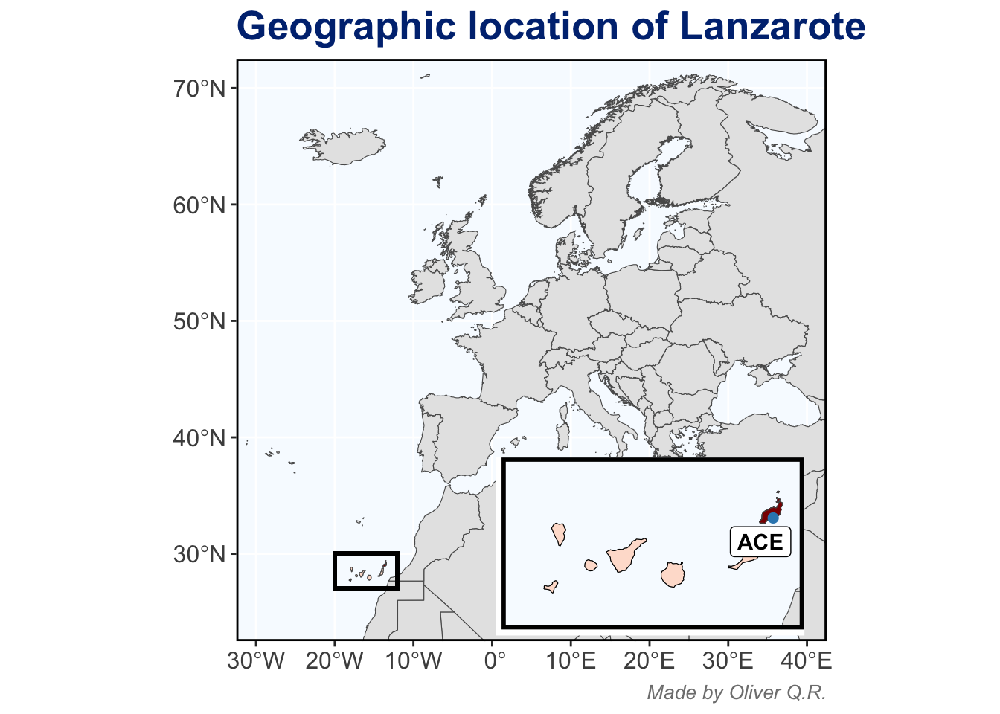

Code
# geographic location of Lanzarote
europe_africa_map_data <- gisco_get_countries(year = "2024",
resolution = "03",
region = c("Africa", "Europe", "Asia"))
canary_islands_map_data <- gisco_get_nuts(nuts_id = "ES70",
resolution = "03",
year = "2024")
lanzarote_map_data <- gisco_get_nuts(nuts_id = "ES708",
resolution = "03",
year = "2024")
europe_africa_map <- europe_africa_map_data %>%
ggplot() +
theme(panel.background = element_rect(fill = "#f7fbff")) +
geom_sf(aes(geometry = geometry), fill = "grey90", size = 0.3) +
geom_sf(data = canary_islands_map_data,
aes(geometry = geometry),
fill = "#fee0d2") +
geom_sf(data = lanzarote_map_data,
aes(geometry = geometry),
fill = "darkred") +
scale_x_continuous(limits = c(-32.5, 42.5)) +
scale_y_continuous(limits = c(22.5, 72.5)) +
coord_sf(expand = FALSE) +
labs(title = "Geographic location of Lanzarote",
caption = "Made by Oliver Q.R.") +
geom_rect(xmin = -20, xmax = -12, ymin = 27, ymax = 30,
fill = NA, colour = "black", linewidth = 1) +
theme(panel.border = element_rect(fill = NA, colour = "black", linewidth = 1),
panel.grid.minor = element_blank(),
plot.title = element_text(face = "bold", size = 20, colour = "#003080"),
plot.caption = element_text(size = 10, face = "italic", colour = "grey50"),
axis.text = element_text(size = 12, face = "bold", colour = "grey30"))
canary_islands_map <- canary_islands_map_data %>%
ggplot() +
theme(panel.background = element_rect(fill = "#f7fbff")) +
geom_sf(data = europe_africa_map_data,
aes(geometry = geometry),
fill = "grey90") +
geom_sf(fill = "#fee0d2", colour = "black") +
geom_sf(data = lanzarote_map_data,
aes(geometry = geometry),
fill = "darkred") +
geom_label_repel(aes(x = -13.6092, y = 28.9456, label = "ACE"),
nudge_y = -0.3, nudge_x = 0.15, fontface = "bold") +
geom_point(aes(x = -13.6092, y = 28.9456), colour = "#3288bd", size = 2) +
scale_x_continuous(limits = c(-19, -13)) +
scale_y_continuous(limits = c(27, 30)) +
coord_sf(expand = FALSE) +
theme(panel.border = element_rect(fill = NA, colour = "black", linewidth = 2),
panel.grid = element_blank(),
axis.line = element_blank(),
axis.text = element_blank(),
axis.ticks = element_blank(),
axis.title = element_blank(),
plot.margin = unit(c(.1, .1, .1, .1), "mm"))
ggdraw(europe_africa_map) +
draw_plot(canary_islands_map,
x = 0.15,
y = 0.11,
height = 0.25)